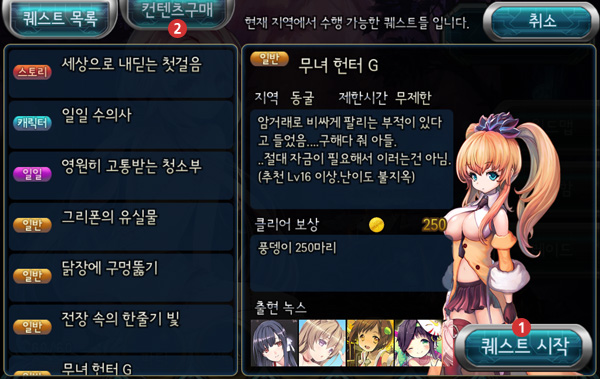
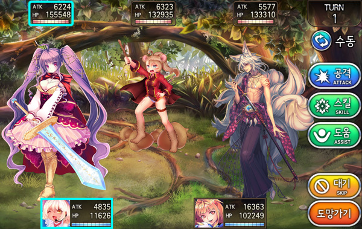
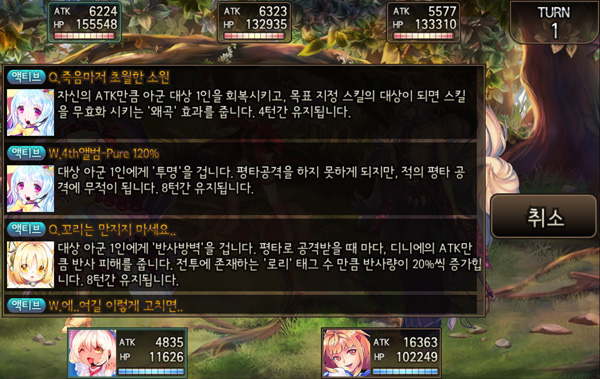

■ Ordering

- This is how you start the game.
- A list of available Quests. Knox dropped in the quest is located at the bottom right. Press [퀘스트 시작] to start the quest.
- The Quest list will be updated with new quests when clearning Main Quest or certain Quests.
- Touching the right button at the top  will show DLC(Downloadable Content) that the Player may buy
will show DLC(Downloadable Content) that the Player may buy  with Spheres(Cash currency), or Nyang
with Spheres(Cash currency), or Nyang
- Bought DLC will show in your Quest list , where you can enjoy the story and obtain the Nox shown in the DLC.
■ Questing
1. Complete the quest in a board game style, AP is consumed in order to move.
2. Roll the roulette when selecting random movement to move the rolled number.
3. Selecting direct movement will consume more AP to move the selected number.
4. In Quests, players will move and battle until the player has reached the end of the map to complete the quest.
5. AP is recovered by 1 per 2 minutes.
■ Battle System
- In the quest,  you will stop and consume AP to battle.
you will stop and consume AP to battle.

- Use the Party to fight using [Attack] [Skill] [Assist].
- Skills of Nox is showned 1 by 1 in battle.
<Skill screen>

<Assist screen>
- Touching the top right of the screen manually([수동]), you can set up Full Automatic Battle[완전 자동 전두] or Attack Automatic Battle[평타 자동 전두].
- When the battle has won, player will get Nox, Nyang, and Scarabs randomly.
- Touch Menu[메뉴] when moving on the map. You can edit the Party[파티편집].
- You can save your progress in your current quest and go to the Main Game screen, you can continue the quest in the future[귀환하기].
- Touch give up the quest and move to the Main Game screen[포기하기].